Casting SPELs in LFE
{kind=link}
Casting SPELs in Lisp, the LFE Edition
Original Common Lisp version by Conrad Barski, M.D.
LFE translation by Duncan McGreggor
© 2007-2015, Conrad Barski, M.D.
© 2015-2020 Duncan McGreggor
This work is licensed under the GNU Free Documentation License 1.2
Casting SPELs in LFE
A Bold New LFE Take on the Common Lisp Comic Classic
Anyone who has ever learned to program in Lisp will tell you it is very different from any other programming language. It is different in lots of surprising ways -- this comic book will let you find out how Lisp's unique design makes it so powerful!
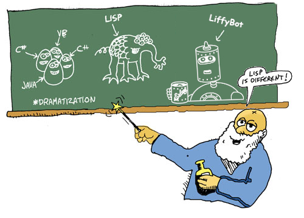
This tutorial has small bits of Lisp code that are presented as it looks when using the LFE REPL (the "interactive interpreter"). The LFE prompt looks like this:
lfe>
Code entered in the REPL looks like this:
lfe> (+ 1 1)
2
Results will come right afterwards, in their own text block, just like you saw in that example just now.
When you copy the code from this book into your own LFE REPL, be sure
not to copy the lfe> prompt! Just copy the code :-)
What will you be copying, you ask? A-ha! This is the best part: your own text adventure game!
First, though, we're going to have to cover some basics. But take heart: you'll be coding up some gamey goodness in no time ;-)
What is LFE?
LFE stands for "Lisp Flavoured Erlang". It's a Lisp dialect written on top of the Erlang Virtual Machine (also known as the "BEAM"). Erlang syntax looks like this:
factors(N) ->
factors(N,2,[]).
factors(1,_,Acc) -> Acc;
factors(N,K,Acc) when N rem K == 0 ->
factors(N div K,K, [K|Acc]);
factors(N,K,Acc) ->
factors(N,K+1,Acc).
LFE syntax looks like this:
(defun factors (n)
(factors n 2 '()))
(defun factors
((1 _ acc)
acc)
((n k acc) (when (== 0 (rem n k)))
(factors (div n k) k (cons k acc)))
((n k acc)
(factors n (+ k 1) acc)))
You don't need to worry about that code or what it means: it's just there to give you a "feel" of these two Erlang syntaxes (LFE in particular!), a visual sense of how the two languages are the same underneath, but superficially different (we'll be discussing syntax very shortly!)
If you don't have LFE installed on your computer, no need to worry -- in the first chapter, you will be setting up LFE so that you can follow along in this book.
Casting SPELs in LFE?
The decision to port Casting SPELs in Lisp to LFE was based on two things. Firstly, it was inspired by an interest in providing the community and new comers with a greater number of interesting learning tools for the language. Secondly, whimsy. The original for Common Lisp was such great fun; how delightful to share that with the LFE community?
It's actually very easy to port basic Common Lisp to LFE. But once you get deeper than syntax, things can diverge quite strongly. It turns out that the immutable data of Erlang and LFE made porting this comic book quite tricky. In the end, I had to give up all hope of the whimsy, and switch gears to basic application architecture best practices.
As such, you will see a very different comic in this book than in the others: immutable data, Erlang records for tracking game state, state being returned by most functions, and many more. At first I was disappointed: this wasn't going to be the best casual, entry-level introduction to LFE.
Upon further reflection, however, I came to embrace this difference. Erlang, and thus LFE, is not just another language you can pick up in a weekend and hack on for fun. It's not a Python, or Ruby, or Julia. Erlang wasn't created to solve the human problem of making a better high-level language, of making programming fit in the brains of new developers more easily. Rather, Erlang was created to hammer a very different nail, and quite the sledgehammer it turned out to be: pounding out some impressive fault-tolerant, distributed systems. Erlang was created to so that programmers could make better industrial grade telecommunications infrastructure.
That's not a Sunday afternoon hacking project.
And this brings me to the point: LFE is not a casual Lisp. It's a Lisp for those who want to build distributed applications like the Erlang software that powers 40% of the world's telecommunications. As a systems programming language, it's somewhat more involved and has many more moving parts than the sort of languages that are picked up like hobbies or to crunch data at work. It's a complete programming language, but it's also like an operating system; a highly-concurrent distributed operating system. If you've never programmed before, I would highly recommend learning another language first, waiting to tackle the concepts behind distributed systems once you have a strong foundation in place.
So why build a game with it? Well, games can be fun when played alone -- and often are. But they can be even more fun when played with good friends. Even lots of friends! By learning to write games in an industrial-strength Lisp which specializes in distributed, fault-tolerant, message-passing applications, you're getting a foundation that can help you build the next SPEL-casting MMOMUD :-) But I digress.
As a result of these ponderings, I concluded the following: the concerns about introducing records, pattern matching, guards, immutable data, and process servers paled in comparison to the other potential ways this comic book could have been rendered for use on the Erlang VM (don't worry, there's no OTP!). And for those who are ready to jump into the world of functional programming for distributed systems, this is a super fun way to start, giving you an intuition for some of the basic building blocks you will use in every LFE application you build from here on out.
Enjoy!
About the Text
This book (available here) is a work in progress, converting Dr. Conrad Barski's original Common Lisp comic book adventure game to Lisp Flavoured Erlang. It was very kind of Dr. Barski to share his work with the Lisp community licensed as GNU Free Documentation, thus allowing others to adopt it for their own preferred language.
Other editions of the book include:
Contributing
If you found a bug, typo, inconsistency, etc., feel free to open a ticket or even submit a pull request!
Building the Book
To build a local copy of the book, you will need to have mdbook installed.
If you don't have this installed, the make command will provide a link where
you may download the (small) compiled binary:
Once you make edits in the text, simply run the following to regenerate the
book output in the ./docs directory:
$ make
Getting Started
The next few sections will walk you through the steps necessary to run the code in the rest of this book.
Getting Set Up
If you're new to LFE and haven't read the LFE Quick Start, that might be a good idea to do that -- you'll feel much more comfortable with the material in this book if you have. If you never encountered a Lisp before, or if your familiarity is rusty, we'd recommend reading through the original Casting SPELs in Lisp. That version is more accessible to the Lisp new-comer.
Prerequisites
Here's what you need before we get started (links are to more resources, should you be missing any of them):
- Erlang and
rebar3need to be installed on your system; great instructions for both are here. - You need to have
gitinstalled on your system. - Developer/build tools for your system (instructions for this are very different between systems and can be found on the Web by searching for "install developer tools" or "build essential" for your operating system).
Once all of the above are set up on your system, you're ready to go! No need
to manually install anything: rebar3 will take care of that for you!
Project Space
$ mkdir -p ~/lab
$ cd ~/lab
$ git clone https://github.com/rvirding/lfe.git
$ cd lfe
$ make
Starting the REPL
Are you ready? Oh, the REPL? That's an acronym that stands for read-eval-print loop -- it's where you can type LFE code interactively. Let's start it up!
$ ./bin/lfe
Erlang/OTP 18 [erts-7.3] [source] [64-bit] [smp:4:4] [async-threads:10]
..-~.~_~---..
( \\ ) | A Lisp-2+ on the Erlang VM
|`-.._/_\\_.-'; | Type (help) for usage info.
| g (_ \ |
| n | | | Docs: http://docs.lfe.io/
( a / / | Source: http://github.com/rvirding/lfe
\ l (_/ |
\ r / | LFE v1.0 (abort with ^G)
`-E___.-'
>
We'll use it more soon, but for now you can try out a little addition:
> (+ 2 2)
4
We'll be writing our whole adventure game here in the REPL :-) Things should go very smoothly, but if you start exploring and things go nuts, you can reset your REPL to its default clean state with this command:
> (reset-environment)
ok
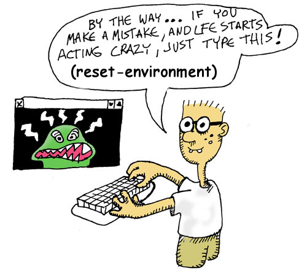
Keep in mind, though, this will clean everything up! You'll have to start over again!
Syntax and Semantics
Every computer language has code that is made up of syntax and semantics. The syntax of a programming language is the basic skeleton your program has to follow so that the compiler knows what's what in your program, so it can tell what's a function, a variable, etc. The semantics of a program is the more "random" stuff, like the different commands you have available and what variables you're allowed to look at at any point in the program. The first thing that is special about Lisp is that it has the simplest syntax of any major programming language.
Basically, the Lisp syntax dictates that any text you give the Lisp compiler has to be arranged into lists, which can be nested into lists of lists or such as needed. The parenthesis mark the beginning and end of each list:
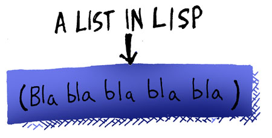
Additionally, the Lisp compiler uses two modes when it reads your code: A Code Mode and a Data Mode. When you're in Data Mode, you can put anything you want into your lists. However, the compiler first starts off reading your code in Code Mode. In Code Mode, your lists need to be a special type of list called a form:
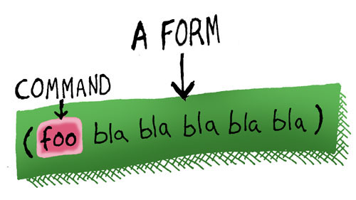
A form is a list where the first symbol in the list has to be a special word that the compiler can understand -- usually the name of a function. In this case, the compiler will send the other items of the list to the function as parameters. When it reads the text for these parameters, it will usually assume that they are also in Code Mode, unless you tell it to flip into data mode.
Introducing the Game
Lay of the Land
As earlier stated, we're going to be creating a game. Our game is going to have some objects in it that the player can pick up and use. It's going to have places. It's going to have a player -- you! It's going to let you interact with it.
Things are going to get pretty deep, pretty quickly, so before we take the dive, let's cruise around in the shallow end. We're going to play in the LFE REPL a bit, defining some variables. Our game won't be using them in exactly this form. For now, though, it will be helpful for demonstrating a few things.
Objects
Let's create some objects, a list of atoms:
> (set objects '(whiskey-bottle bucket frog chain))
(whiskey-bottle bucket frog chain)
Ok, now let's dissect this line and see what it means: Since a Lisp compiler always starts reading things in Code Mode and expects a form, the first symbol, set, must be a command. In this case, the command sets a variable to a value: The variable is objects The value we are setting it to is a list of the four objects in our game. Now, since the list is data (i.e. we don't want the compiler to try and call a function with the name of whiskey-bottle) we need to "flip" the compiler into Data Mode when reading the list. The single quote in front of the list is the command that tells the compiler to flip:
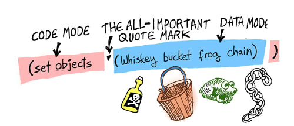
Locations
In this simple game, there will only be three different locations: A house with a living room and an attic, along with a garden. Here is a picture of what our world looks like:
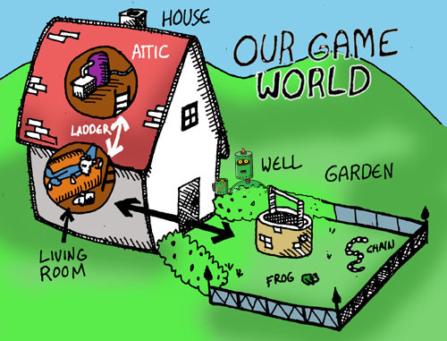
We're going to provide descriptions for each of these locations, as well as provide metadata associated with them. We'll do that later with something called records. But for now, just to get some practice with some of the basic concepts in Lisp, let's define three variables, each containing bogus data for our locations:
> (set living-room "Super-cool data.")
> (set garden "Even cooler data.")
> (set attic "The best data evar.")
Now, assume we wanted to bring all of these together in yet another, mind-blowingly cool variable, state:
> (set state `(#(living-room ,living-room)
#(garden ,garden)
#(attic ,attic)))
What's going on here? Well, we've defined what is called a "property list" in LFE, a list of key/value tuples. Our three keys are the atoms living-room, garden, and attic. Our three values are the data stored in each of the variables.
But there's more going on there, and it looks pretty strange: that's back-quoting and unquoting you're seeing. Just like above, when we used a quote to flip the compiler from Code Mode to Data Mode, by using the back-quote (the quote in the upper left corner of the keyboard) we can not only flip, but then also flop back into Code Mode by using a comma:
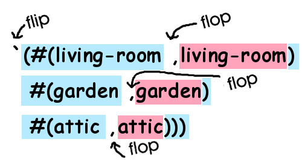
This "back-quoting" technique is a great feature in Lisp -- it lets us write code that looks just like the data it creates. This happens frequently with code written in a functional style: By building functions that look like the data they create, we can make our code easier to understand and also build for longevity: As long as the data doesn't change, the functions will probably not need to be refactored or otherwise changed, since they mirror the data so closely. Imagine how you'd write a function like this in VB or C: you would probably chop the path into pieces, then append the text snippets and the pieces together again -- a more haphazard process that "looks" totally different from the data that is created and probably less likely to have longevity.
Introducing Functions
As you write more Lisp, you're going to find yourself writing a lot of functions. Before we write one, though, let's call some!
> (car objects)
whiskey-bottle
The car function is one of the oldest functions in Lisp (some modern Lisps no longer define it) and it gets its name from manipulating memory registers (originally on the old IBM 704, which was used to create Lisp!). car gets the first element of a list. It has a complement, cdr:
> (cdr objects)
(bucket frog chain)
cdr gets the rest of a list. Let's do some more:
> (cdr (cdr objects))
(frog chain)
> (car (cdr (cdr objects)))
frog
Ignoring the fact that there's a function which defines this exact behaviour, let's define our own which computes this playful exploration:
> (defun cccr (objs)
(car (cdr (cdr objs))))
cccr
In Lisp, defun lets us define a function which we can call later. A function definition has several key parts:
- the call to
defun - a name for the function
- the arguments that the function will accept when we call it later (in this case, we only have one argument,
objs) - the function body
Notice that we defined what is called a local variable in that function. This means that the objs variable will only be accessible inside the function itself.
Let's try it out:
> (cccr objects)
frog
That's much easier to type! (For the curious, Common Lisp and LFE define the function caddr which does the same as (car (cdr (cdr ...)))).)
Note that functions in Lisp are often more like functions in math than in other programming languages: Just like in math, this function doesn't print stuff for the user to read or pop up a message box. All it does is return a value as a result of the function.
In LFE, there are all sorts of ways to create functions, so be prepared -- you're going to see some different ways soon!
Getting Functional
Global State
Many languages allow for something called global variables. The LFE REPL has partial support for this -- you did it when you created the objects variable earlier.
What does it mean, though?
For example, if you have a global variable, you can access it from a function. We could have defined our cccr function like this, to take advantage of the global variable objects:
> (defun cccr ()
(car (cdr (cdr objects))))
The function doesn't define something called objects and it doesn't receive something called objects via a function argument. So it's accessing the global variable. Some languages will also let you change the value of global variables. Conversely, others consider this an anti-pattern (something you shouldn't do) and either discourage it or outright prevent it.
LFE is one of the latter: you can't change a global variable from inside a function (unless you do some seriously crazy things to your code ... it is a Lisp, after all, so even some impossible things are possible!). LFE does allow you to shadow global variables, but that won't change the original (shadowing just covers it up temporarily).
When writing a simple game or modeling objects, global state is an easy thing to use for new-comers. Common Lisp supports this easily. However, in LFE this isn't an option. We're going to have to dive a little deeper for an alternative, and so our game won't be quite as simple as it might have been if we wrote it in Common Lisp or Python. But since LFE is a language for writing distributed systems, you are probably interested in avoiding global state anyway!
So, buckle your seat-belt: before adventure time, we're gonna do some learnin'! It's okay, though -- it'll be fun :-)
Non-Global State
What are the alternatives to global state? One of the most common techniques in functional programming languages like LFE, is to pass data from one function to the other. If a function needs to change data, then it outputs a new copy of the data with the change, and this changed data is then passed to other functions.
In LFE, a common pattern (something you do want to do) is to create a "state" data structure, and pass this around. You can use property lists for this, but records are more common. The most recent versions of Erlang allow the use of maps.
The game you're going to create in LFE will use records. As we start writing our functions, accessing our data, and changing the game state, watch closely: you're going to be learning some of the classic techniques of functional programming.
Hints to keep in mind:
- You will need a data structure that captures the complete state of the game (objects, locations, players, etc., and all the ways in which these might change).
- Any time you wish to perform a calculation based upon game state, you will need to pass the state into your function as an argument.
- Any time you wish to update game data, you will need to output the modified state, and then use that new state in the rest of your code.
The Functional Programming Style
We've mentioned it once or twice, so it's probably time to talk about it in some more detail: functional programming (to be clear, this is completely unrelated in any way to the concept called "procedural programming" or "structural programming" that you might have learned about in high school...). In this style, the goal is to write functions that always follow the following rules:
-
You only read variables that are passed into the function or are created by the function (So you don't read any global variables)
-
You never change the value of a variable that has already been set (So no incrementing variables or other such foolishness)
For pure functional programming, there is another rule:
- You never interact with the outside world, besides returning a result value. (So no writing to files, no writing messages for the user)
You may be wondering if you can actually write any code like this that actually does anything useful, given these brutal restrictions... the answer is yes, once you get used to the style... But why would anyone bother following these rules? One very important reason: Writing code in this style gives your program referential transparency: This means that a given piece of code, called with the same parameters, always positively returns the same result and does exactly the same thing no matter when you call it. This can reduce programming errors and is believed to improve programmer productivity in many cases.
Of course, you'll always have some functions that are not pure functional in style or you couldn't communicate with the user or other parts of the outside world. We're going to be focusing on the first two rules in this book.
Game World Data
Organizing Things with Records
Making a Plan
As we've said, our game is going to need the following:
- objects
- places
- place data (description, exits)
- object locations
- player location
We need to create a data structure to hold all of that, so that it can be passed to functions which need one or more bits of that data. As we mentioned when we talked about Non-Global State, The data structure we're going to use is the LFE record. A record is a simple data structure that lets us associate keys and values.
Let's attack this problem in pieces; we can start with the big picture, and then fill that in.
Game State
Let's create the over-arching record definition for our game state:
(defrecord state
objects
places
player-location
goals)
We've just defined a record called state that has four fields: objects, places, player-location, and goals.
Objects
For each object in the game, we need to know its name and location:
(defrecord object
name
location)
Let's create some objects now, improving upon our initial "objects" exploration:
> (set objects
(list (make-object name 'whiskey-bottle location 'living-room)
(make-object name 'bucket location 'living-room)
(make-object name 'frog location 'garden)
(make-object name 'chain location 'garden)))
(#(object whiskey-bottle living-room)
#(object bucket living-room)
#(object frog garden)
#(object chain garden))
You are probably wondering where that mysterious make-object function came from. When you create a record in LFE, LFE creates several functions dynamically, just for use with your record: their names start with or have as part of their own names, the record name you used. For example, when you created the state and object records, LFE created the make-state and make-object functions (among several others -- more later).
Places and Exits
Now that we've defined some objects in our world, we're on our way towards describing our world. But there's more to go, still. Our next goal is to create a record for our places:
(defrecord place
name
description
exits)
Great! Now we can define our places ... almost. What's the "exit" business? Well, if we're going to move about from place to place, we need to know what direction to go in, the object that lets us pass from one location to the next, and the final destination. Let's create another record for this data:
(defrecord exit
direction
object
destination)
Now we're ready to create our places!
> (set living-room
(make-place
name 'living-room
description (++ "You are in the living-room of a wizard's house. "
"There is a wizard snoring loudly on the couch.")
exits (list
(make-exit
direction "west"
object "door"
destination 'garden)
(make-exit
direction "upstairs"
object "stairway"
destination 'attic))))
#(place living-room
"You are in the living-room of a wizard's house. There is a wizard snoring loudly on the couch."
(#(exit "west" "door" garden) #(exit "upstairs" "stairway" attic)))
As you can see above, we have records being created inside records: the living-room record has two exits in it, and we just created those exit records when created the living room's place record.
Something else new: the ++ function. This is the function for combining two lists in LFE, and since strings and lists are actually the same exact data type, it's also what you use to concatenate strings.
Three more to go!
> (set garden
(make-place
name 'garden
description (++ "You are in a beautiful garden. "
"There is a well in front of you.")
exits (list
(make-exit
direction "east"
object "door"
destination 'living-room))))
#(place garden
"You are in a beautiful garden. There is a well in front of you."
(#(exit "east" "door" living-room)))
> (set attic
(make-place
name 'attic
description (++ "You are in the attic of the wizard's house. "
"There is a giant welding torch in the corner.")
exits (list
(make-exit
direction "downstairs"
object "stairway"
destination 'living-room))))
#(place attic
"You are in the attic of the wizard's house. There is a giant welding torch in the corner."
(#(exit "downstairs" "stairway" living-room)))
> (set netherworld
(make-place
name 'netherworld
description (++ "Everything is misty and vague. "
"You seem to be in the netherworld.\n"
"There are no exits.\n"
"You could be here for a long, long time ...")
exits '()))
This may seem like a lot of overhead, but it means that things will be much
cleaner and less susceptible to bugs: each item of data is well-defined, with functions that create the data, access the data, and update the data -- both the "magical" record functions mentioned above as well as functions defined in the Erlang standard library (e.g., the proplists and orddict modules).
Furthermore, this is a common practice used in many real-world Erlang and LFE applications: records are passed as inputs to functions and returned as (often updated) outputs, which in turn are fed into other functions.
Goals
We're going to have a couple of puzzles in our game and a final task to accomplish, once these puzzles are solved. Let's define the goal record:
(defrecord goal
name
achieved?)
Now the goals:
> (set goals
(list (make-goal name 'weld-chain achieved? 'false)
(make-goal name 'dunk-bucket achieved? 'false)
(make-goal name 'splash-wizard achieved? 'false)))
(#(goal weld-chain false)
#(goal dunk-bucket false)
#(goal splash-wizard false))
Now that we have our records, let's put them together!
Making the Game State
Here's a refresher on our locations:
Now we can combine the data we have defined to finally make our world state!
> (set state (make-state
objects objects
places (list living-room garden attic netherworld)
player-location 'living-room
goals goals))
#(state
(#(object whiskey-bottle living-room)
#(object bucket living-room)
#(object frog garden)
#(object chain garden))
(#(place living-room
"You are in the living-room of a wizard's house. There is a wizard snoring loudly on the couch."
(#(exit "west" "door" garden) #(exit "upstairs" "stairway" attic)))
#(place garden
"You are in a beautiful garden. There is a well in front of you."
(#(exit "east" "door" living-room)))
#(place attic
"You are in the attic of the wizard's house. There is a giant welding torch in the corner."
(#(exit "downstairs" "stairway" living-room)))
#(place netherworld
"Everything is misty and vague. You seem to be in the netherworld.\nThere are no exits.\nYou could be here for a long, long time ..."
()))
living-room
(#(goal weld-chain false)
#(goal dunk-bucket false)
#(goal splash-wizard false)))
This state contains everything important that we'd like to know about:
- the objects in the game and their locations
- the player location
- the places in the game
- the goals and their status
Notice how information-rich this one variable is and how it describes all we need to know but not a thing more. Lispers love to create small, concise pieces of code that leave out any fat and are easy to understand just by looking at them.
Now let's begin making some game commands!
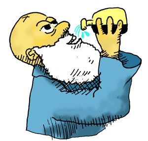
Record Functions
Wait -- before we make game commands, let's take a quick time-out for a public service announcement: records are your friends! And they come with magically created functions. You'll be seeing more of them, so let's get you introduced.
As noted, for every record we define, a bunch of functions are magically created by LFE. These functions let us:
- create records of the given type
- retrieve values from the record
- update values in a record
- extract metadata from a record
The record functions which you will be seeing more of shortly are those of the following forms:
make-<name>- create a new record<name>-<field>- get a record field valueset-<name>- set a whole recordset-<name>-<field>- set the value of a record fieldmatch-<name>- use a record while pattern matching
This is not a complete list, but it's enough get get us started! (see the Reference Guide for more details).
Now we can create some game commands ...
Looking Around in Our Game World
Location, Location, Location
The first command we'd want to have is a command that tells us about the location we're standing in. What do we need to do? Perhaps if we start with describing all places, we can work towards one place. This may sound a little backwards, but Lisp is very good with lists, so let's try it!
We can get there in stages by playing with our new game state and record functions. Getting the player location is super-easy:
> (state-player-location state)
living-room
What about a place's description? Well, that's buried a few more levels deep in our game state record. We'll take a look, but first we can refresh our memories about the fields defined in the records:
> (fields-state)
(objects places player-location goals)
> (fields-object)
(name location)
> (fields-place)
(name description exits)
Let's imagine our location is in living-room (which, indeed, it is...).
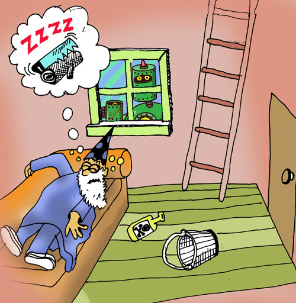
To get the description field, we'll need a place record; to get the place, we'll need a specific element of the places field of the state record. Let's do it:
> (place-description
(car
(state-places state)))
"You are in the living-room of a wizard's house. There is a wizard snoring loudly on the couch."
>
Hey, that wasn't so bad! And we got to use our old friend car :-) But how do we turn this into a function? Let's start with seeing if we can get a description for all places:
> (lists:map
(lambda (x)
(place-description x))
(state-places state))
("You are in the living-room of a wizard's house. There is a wizard snoring loudly on the couch."
"You are in a beautiful garden. There is a well in front of you."
"You are in the attic of the wizard's house. There is a giant welding torch in the corner."
"Everything is misty and vague. You seem to be in the netherworld.\nThere are no exits.\nYou could be here for a long time.")
Wow! How did we do that? Well, there are a few new things here. This function uses a common functional programming technique: Higher Order Functions. This means that the map function in the Erlang standard library's lists module is taking another function as a parameter so that it can be called for each item in the list that is passed (in this case, the list that is passed is the output of the call to (state-places ...)).
But what function? Good question! This is an example of the Function with No Name, or as it is better known, an anonymous function. Anonymous functions are not created with define like named functions are. Instead, they are created by using the lambda form. Anonymous functions are useful for doing a task that you don't want to bother writing a function for (or to wrap something that's not a function, but you want to treat like a function ...).
Thinking in Patterns
We've learned how to get a description of all places, but how do we get just the description of just the place where our player is? We can apply our new knowledge:
- Let's write a function that checks the player location against a
placerecord to see if they're the same. - Then, let's use that function with a list of place records!
Here's the first part:
(defun here?
((loc (match-place name place-name)) (when (== loc place-name))
'true)
((_ _)
'false))
That looks pretty wild, so let's pause while we go through it.
LFE supports something called pattern matching thanks to its heritage from Erlang (which got it from Prolog). Many of the Lisp forms in LFE support pattern matching, and one of those is a function definition: you can put patterns in a function's arguments when you define it. However, when you do this, you need to make some changes. That's why the function above looks funny, because of these changes: an extra set of parentheses is needed (if you're wondering why, it's because instead of just one set of arguments and a function body, patterns allow for many sets of arguments and corresponding bodies ... so the extra set of parentheses is like a list of function definitions).
Functions without pattern matching in their arguments look like this, as we saw previously:
(defun <name> (<arg> ...)
<body>)
Whereas functions with pattern matching in their arguments look like this:
(defun <name>
((<pattern>)
body)
((<pattern>)
body)
...)
You can have as many different patterns and associated function bodies as you want -- as long as they all have the same number of arguments (also known as arity). Our function has two arguments (2-arity): a location loc and a pattern matching against a place record. Our pattern was a call to one of the magical functions created by our place record, match-place. So what got filled in the <pattern> slot was a (match-place ...) call, and that explains why you saw three opening parentheses in a row.
But we've got something else new there, too: the when form. When you see a (when ...) after a pattern in LFE, it's called a guard. This guard is standing watch over the pattern, and will only let the pattern match if the location loc that was passed as a regular function argument is the same as the place record's location field.
That takes care of the first pattern and function body. The second function body has a pattern that seems rather strange: (_ _). Then the body simply returns false no matter what! In this case, the pattern is saying "I don't care what the values are for the two arguments that are getting passed to me, just move on to the body." And, as we noticed, the body then just returns false. Thus, the overall meaning of this function is "if the first pattern is matched, the definition of "here" is met and return true; anything else does not meet the definition of "here", therefore return false.
Let's try it out against the first place in our state's places field:
> (here? 'living-room (car (state-places state)))
true
> (here? 'attic (car (state-places state)))
false
here? takes two arguments: a location name and a place record. Remember we wanted to be able to handle a list of places. We used lists:map before, but that's not exactly what we want here. What would be perfect is if we could find a function that would only return the items of a list that met certain criteria (in this case, the criteria is that the player location and the place record name are the same!).
It turns out there is exactly this function in the Erlang standard library: the lists:filter function. lists:filter takes two arguments:
- A predicate function (a function that returns
trueorfalse), given some input, and - A list of inputs to give the predicate function.
Let's create a function which uses lists:filter to only return the place that returns true when we ask here?:
(defun get-here
(((match-state player-location player-loc places locs))
(car (lists:filter
(lambda (loc)
(here? player-loc loc))
locs))))
We used pattern matching again, but this time to do something a tiny bit clever: we used it to define the variables player-loc and locs. In other words, with our pattern above, we said "When you get a state record coming through here, get its player-location field and assign it to the player-loc variable; also get its places field and assign it to the locs variable."
Now we can use this function to get the description of the player location:
(defun describe-location (game-state)
(++ (place-description (get-here game-state)) "\n"))
Now let's use our new function:
> (describe-location state)
"You are in the living-room of a wizard's house. There is a wizard
snoring loudly on the couch."
Perfect! Just what we wanted.
Exits
One thing that our describe-location function doesn't do is tell us about the exits in and out of the current location to other locations. Let's write a function that describes these exits, starting with one exit:
(defun describe-exit
(((match-exit object obj direction dir))
(++ "There is a " obj " going " dir " from here.")))
Let's try it out first and then figure out how to use it. To try it, we're going to need some testing data, though:
> (set test-exit (car (place-exits
(car (state-places state)))))
#(exit "west" "door" garden)
There: that gives us the first exit in the list of exits we got back from the
place-exits call. Let's try these out:
> (describe-exit test-exit)
"There is a door going west from here."
Now we can describe an exit, but see what we had to do to get our exit data? (place-exits ...) returns a list (and we called car to get the first element of that list). All of the place records have a list of exits (even if there's only one of them). As such, we need a function what will describe one or many exits. Sounding familiar? Good! You're catching on!
In fact, it's so familiar, we can use the same get-here function that we used before!
(defun describe-exits (game-state)
(string:join
(lists:map
#'describe-exit/1
(place-exits (get-here game-state)))
" "))
What our describe-exits function does is build a list of strings and then joins them together with a space.
But we skipped over something. Remember how we used lists:map before? By passing it a lambda? Well here, we're passing it a named function, not an anonymous function. To pass a function, you need to put #' in front of the function name, and then it's arity after the function name. So, we get a list of the exits records, pass each record to describe-exit/1, and with the resulting list of exit descriptions, join them together using a single space.
Let's try this new function:
> (describe-exits state)
"There is a door going west from here. There is a stairway going upstairs from here."
Beautiful!
Next, we'll want to find things ...
Finding Things
We still have one thing we need to describe: If there are any objects on the floor at the location we are standing in, we'll want to describe them as well. Let's first write a helper function that tells us whether an item is in a given place:
(defun item-there?
((loc (match-object location obj-loc)) (when (== loc obj-loc))
'true)
((_ _)
'false))
This is very similar to one of our previous functions, having both pattern matching and a guard. Our function above is 2-arity, with the first argument being the location, and the second argument the expression for matching an object record.
That's the first function head pattern that there? has. The second function head pattern has two arguments, just like the first one, but in this case the function arguments are both the "don't care" variable: the underscore. This part of the function is saying, "If you've made it past the first pattern without matching, I don't care what your location is or what your record is: I'm going to return false. In other words, since there was no match, the queried item is not present.
Let's try out that function in the REPL. This will tell us if the first object in the list of game objects is in the living room:
> (item-there? 'living-room (car (state-objects state)))
true
> (item-there? 'attic (car (state-objects state)))
false
Remember that (state-objects state) returns all game objects. Let's use lists:filter like we did before with the place descriptions:
(defun whats-here?
(((match-state player-location player-loc objects objs))
(lists:filter
(lambda (obj)
(item-there? player-loc obj))
objs)))
Now let's try it out:
> (whats-here? state)
(#(object whiskey-bottle living-room) #(object bucket living-room))
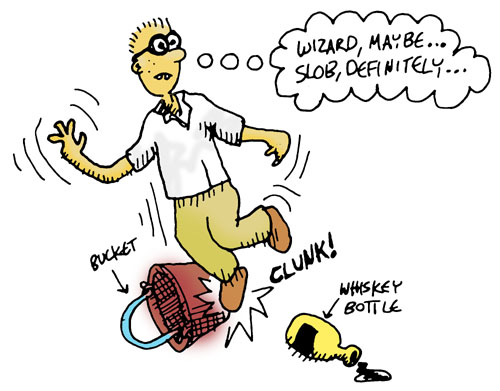
You know how, in the last section, we described a single exit and then a list of exits? We're going to do the same thing now. In fact, the functions are very similar. Here's the function for describing an item:
(defun describe-item
(((match-object name obj-name))
(++ "You see a " (atom_to_list obj-name) " on the ground.")))
(defun add-newline
(('()) '())
((string) (++ string "\n")))
That last function is to prevent a newline being printed when there are no items to describe. What it's saying is "if I get an argument that matches an empty list, I'll just return an empty list; if I get a non-empty list, I'll append a newline character."
Now let's use this function and our whats-here? function to describe all the items in the current room:
(defun describe-items (game-state)
(add-newline
(string:join
(lists:map
#'describe-item/1
(whats-here? game-state))
" ")))
There's nothing new here -- you've seen all of this before. You're starting to get it, right? Let's try our latest function:
> (describe-items state)
"You see a whiskey-bottle on the ground. You see a bucket on the ground.\n"
We're doing a good job defining the puzzle pieces. Next we'll see how they start to fit together ...
Putting These Pieces Together
Now we can tie all these descriptor functions into a single, easy command
called display-scene/1 which calls all the descriptor functions and describes everything:
(defun display-scene (game-state)
(io:format
"~n~s~s~s"
(list (describe-location game-state)
(describe-items game-state)
(describe-exits game-state))))
Note that we're using an awkward name for now -- by the time we finish our game, we'll have created very easy game commands!
Let's try it:
> (display-scene state)
You are in the living-room of a wizard's house. There is a wizard
snoring loudly on the couch.
You see a whiskey-bottle on the ground. You see a bucket on the ground.
There is a door going west from here. There is a stairway going upstairs from here.ok
Pretty cool!
Let's create another function for just displaying the exits, as that might come in handy during game-play:
(defun display-exits (game-state)
(io:format
"~n~s"
(list (describe-exits game-state))))
Casting SPELs
Walking Around In Our World
Ok, now that we can see our world, let's write some code that lets us walk around in it. Let's start with a helper function that lists the valid directions in which our player can move:
(defun get-valid-moves (exits)
(lists:map
(lambda (x)
(list_to_atom (exit-direction x)))
exits))
Since we're in the living room right now, our two valid moves should be those that take us to the garden or to the attic:
> (get-valid-moves (place-exits (get-here state)))
(west upstairs)
We used the same record function that we did in the "Exits" section: place-exits, after getting the place record for our current location.
We've got our list of valid moves the player can make; what next? Well, once the player moves in a direction, we'll want to set that destination as the new location for the player. So, given a list of exits, we need to match the one that the player chose to use:
(defun match-directions
((player-dir (match-exit direction dir))
(if (== dir (atom_to_list player-dir))
'true
'false)))
(defun get-new-location (player-dir exits)
(exit-destination
(car
(lists:filter
(lambda (exit) (match-directions player-dir exit))
exits))))
So, given a list of exits for the current location ((place-exits (get-here state))), what is the destination if the player choses to go west?
> (get-new-location 'west (place-exits (get-here state)))
garden
Excellent!
Let's create some more helper functions: whether the player's move is good or bad, two things need to happen, and in this order:
- A message needs to be displayed, and
- The game state needs to be returned.
Let's make those functions now:
(defun good-move (game-state)
(display-scene game-state)
game-state)
(defun bad-move (game-state)
(io:format "~nYou can't go that way.~n")
game-state)
With these in place, we're ready to create our first action:
(defun walk-direction (direction game-state)
(let ((exits (place-exits (get-here game-state))))
(case (lists:member direction (get-valid-moves exits))
('true (good-move
(set-state-player-location
game-state
(get-new-location direction exits))))
('false (bad-move game-state)))))
What are you waiting for?! Let's try it!
> (set state (walk-direction 'west state))
You are in a beautiful garden. There is a well in front of you.
You see a frog on the ground. You see a chain on the ground.
There is a door going east from here.
...
You will also see the new state displayed in the REPL. We'll talk more about that later. (Don't worry, we're going to make it go away ... eventually!)
It would be nice to adjust the walk-direction/2 function so that it doesn't have an annoying quote mark in the command that the player has to type in. But, as we have learned, when the compiler reads a form in Code Mode, it will read all its parameters in Code Mode, unless a quote tells it not to.
Is there anything we can do to tell the compiler that west is just a piece of data without the quote?
Let's find out ...
Casting SPELs
Now we're going to learn an incredibly powerful feature of Lisp: Creating SPELs!
SPEL is short for "Semantic Program Enhancement Logic" and lets us create new behavior inside the world of our computer code that changes the Lisp language at a fundamental level in order to customize its behavior for our needs- It's the part of Lisp that looks most like magic. To enable SPELs, we first need to activate SPELs inside our Lisp compiler (Don't worry about what this line does -- advanced Lispers should click here):
Type this into your REPL:
> (defmacro defspel body `(defmacro ,@body))
()
Ok, now that they're enabled, let's cast our first spell, called walk:
(defspel walk (direction game-state)
`(walk-direction ',direction ,game-state))
What this code does is it tells the Lisp compiler that the atom walk is not actually the atom walk but is, instead, walk-direction and that the direction actually has a quote in front of it, even though we can't see it. Basically we can sneak in some special code in between our program and the compiler that changes our code into something else before it is compiled:
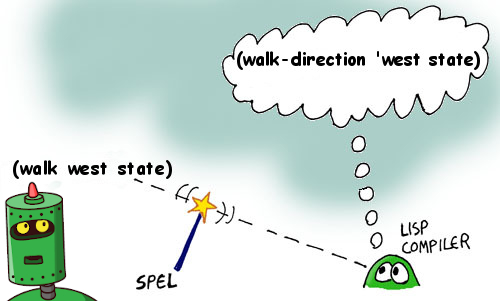
Notice how similar this function looks to the code we had written before for describe-exit. In Lisp, not only do code and data look a lot identical, but code and special commands to the compiler (the SPELs) look identical as well -- a very consistent and clean design!
Let's try our new spell:
> (set state (walk east state))
You are in the living-room of a wizard's house. There is a wizard
snoring loudly on the couch.
You see a whiskey-bottle on the ground. You see a bucket on the ground.
There is a door going west from here. There is a stairway going upstairs from here.
...
Much better!
Wait, why (set state ...)? Remember: this is functional programming! We're not changing any global variables inside functions. So if our player walks, how do we make sure that the new state created by the walk SPEL is usable for the next command? We set the output of the walk SPEL (which is the new state) to the state variable!
Interacting
Now we'll create a command to pick up objects in our world. We'll need some helper functions for this. To help think about which helper functions we need to create, let's list the things we need to do:
- Check to see if the item we seek is present
- Set the object location of
playerfor the object we seek - Update the list of objects
- Update the game state
(defun good-pick (item-name)
(io:format "~nYou are now carrying the ~s.~n"
(list (atom_to_list item-name))))
(defun check-item
((item-name (= (match-object name obj-name) obj)) (when (== item-name obj-name))
(good-pick item-name)
(set-object-location obj 'player))
((_ obj) obj))
We saw something like this before, with our function that conditionally printed a new line. In check-item/2, there are two matches against function arguments: one is checking the value of a passed object name and the record's object name; the other doesn't care. If there's no match with the object name, the state isn't updated -- the old state is simply returned.
Here are some more helper functions we'll need:
(defun update-items (item-name game-state)
(lists:map
(lambda (obj) (check-item item-name obj))
(state-objects game-state)))
(defun get-item-names (game-state)
(lists:map
(lambda (x) (object-name x))
(whats-here? game-state)))
(defun bad-pick ()
(io:format "~nThat item is not here.~n"))
That's all the helper functions we need; now for the main attraction:
(defun pickup-item
((item-name (= (match-state player-location player-loc objects objs) game-state))
(case (lists:member item-name (get-item-names game-state))
('true
(set-state-objects
game-state (update-items item-name game-state)))
('false
(bad-pick)
game-state))))
Our pickup-item function takes two arguments:
- the name of an item, and
- the game state record
But it's also doing some pattern matching: its extracting the player's current location as well as the list of objects in the game. Then it checks to see if the item passed as an argument is in present in the player's current location.
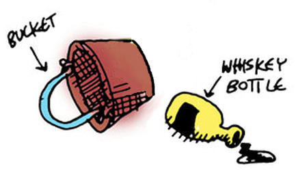
Now let's cast another SPEL to make the command easier to use:
(defspel pickup (item-name game-state)
`(pickup-item ',item-name ,game-state))
Now let's try our new SPEL:
> (pickup whiskey-bottle state)
You are now carrying the whiskey-bottle.
...
Again, we're going to keep ignoring the state data that is returned with each of our commands -- we'll be taking care of that in the next chapter!
> (pickup frog state)
That item is not here.
...
Now let's add a couple more useful commands: first, a command that lets us see our current inventory of items we're carrying (with the obligatory helper functions first!):
(defun inv-obj
(((match-state objects objs))
(lists:filter
(match-lambda
(((match-object location 'player)) 'true)
((_) 'false))
objs)))
(defun inv-name (game-state)
(lists:map
(lambda (x) (object-name x))
(inv-obj game-state)))
(defun get-inv-str (game-state)
(string:join
(lists:map
(lambda (x) (++ " - " (atom_to_list x) "\n"))
(inv-name game-state))
""))
Did you notice our inv-obj helper function has a match-lambda? In LFE, you can even do pattern matching in anonymous functions!
(defun display-inv (game-state)
(let ((inv-str (get-inv-str game-state)))
(case inv-str
('() (io:format "~nYou are not carrying anything.~n"))
(_ (io:format "~nYou are carrying the following:~n~s"
(list inv-str))))))
Try it out:
> (display-inv state)
You are not carrying anything.
Now pick up the bucket and try again:
> (set state (pickup bucket state))
You are now carrying the bucket.
...
> (display-inv state)
You are carrying the following:
- bucket
Now a function that tells us if we have a certain object on us:
(defun inv? (item-name game-state)
(lists:member item-name (inv-name game-state)))
Try it out:
> (inv? 'bucket state)
true
> (inv? 'chain state)
false
Complex Interactions
We've just implemented some simple interactions like picking up objects or checking our player's inventory. What about interacting with the world on a conditional basis? We need to add these sorts of actions to the game so that the player can meet the conditions to win in the game.
Now we're to the bit about goals. Let's write some functions that will help us get info about goals and set the status of goals.
(defun goal-matches?
((goal-name (= (match-goal name name) goal)) (when (== goal-name name))
`#(true ,goal))
((_ _)
'false))
(defun filter-goals (goal-name game-state)
(lists:filtermap
(lambda (x) (goal-matches? goal-name x))
(state-goals state)))
(defun extract-goal
(('())
'undefined)
((`(,goal))
goal))
(defun get-goal (goal-name game-state)
(extract-goal (filter-goals goal-name game-state)))
(defun goal-met? (goal-name game-state)
(let ((goal (get-goal goal-name game-state)))
(if (== goal 'undefined)
goal
(goal-achieved? goal))))
There are a couple of things in this code you haven't yet seen:
- the odd
(= ...)form, and lists:filtermap
The (= ...) form is not an equality test! In LFE, you can test if two things are equal with (== ...) or (=:= ...). So what is (= ...), then? If you look at it, you see that it's wrapping a record matching in the function arguments. In our match, we only care about one field from the goal record: name. And we only care if it matches the passed argument goal-name. Let's say our match succeeds, that the chain is already welded ... now what? We don't have any variables defined! Our function needs to return the game state, so how do we get it?
In LFE record-matching, you have the ability to not only match individual fields from a record, but to wrap the whole matching up and assign the passed record to a variable. You do that with the (= ...) form!
The function lists:filtermap does what you might guess: it performs a map and a filter simultaneously. In order to use this, the function passed to lists:filtermap needs to return false for a bad match and a tuple of #(true ,value) for a good match. In our case, the value is the matching goal.
Also, don't let the (goal-acheived? ...) call confuse you -- that's the magically created function for the goal record's achieved? field!
So we've managed to get goal information -- what about updating goals? We can do the same thing that we did for updating objects:
(defun good-goal (item-name)
(io:format "~nYou have achieved the '~s' goal!~n"
(list (atom_to_list item-name))))
(defun check-goal
((goal-name (= (match-goal name g-name) goal)) (when (== goal-name g-name))
(good-goal goal-name)
(set-goal-achieved? goal 'true))
((_ goal) goal))
(defun update-goals (goal-name game-state)
(set-state-goals
game-state
(lists:map
(lambda (goal) (check-goal goal-name goal))
(state-goals game-state))))
The first of the goals we'll write code for is the welding of the chain to the bucket in the attic:
(defun weld-ready? (game-state)
(andalso (inv? 'bucket game-state)
(inv? 'chain game-state)
(== (state-player-location game-state) 'attic)))
As you can see, that function checks to make sure that all the necessary conditions are present for a successful welding.
We're going to need some functions that print messages to the player; let's create those now:
(defun weld-not-ready ()
(io:format "~nYou seem to be missing a key condition for welding ...~n"))
(defun cant-weld ()
(io:format "~nYou can't weld like that ...~n"))
(defun good-weld (game-state)
(io:format "~nThe chain is now securely welded to the bucket.~n")
game-state)
(defun already-welded ()
(io:format "~nYou have already welded the bucket and chain!~n"))
Notice that our good-weld function takes the game state as a parameter, unlike the other functions. This is us planning for the future :-) We may want to do something with the game state after we check for a good weld ...
And now for the welding!
(defun weld-them
(('chain 'bucket game-state)
(let ((ready? (weld-ready? game-state)))
(cond ((goal-met? 'weld-chain game-state)
(already-welded)
game-state)
((not ready?)
(weld-not-ready)
game-state)
(ready?
(good-weld
(update-goals 'weld-chain game-state))))))
((_ _ game-state)
(cant-weld)
game-state))
All of the code above should be familiar to you now, and with that, we've pieced together all our various functions to give our game a new action.

Let's try our new command:
> (weld-them 'chain 'bucket state)
You seem to be missing a key condition for welding ...
Oops... we're don't have a bucket or chain, do we? ...and there's no welding machine around... oh well...
Now let's create a command for dunking the chain and bucket in the well. We'll need similar functions for this action:
(defun dunk-ready? (game-state)
(andalso (inv? 'bucket game-state)
(goal-met? 'weld-chain game-state)
(== (state-player-location game-state) 'garden)))
(defun dunk-not-ready ()
(io:format "~nYou seem to be missing a key condition for dunking ...~n"))
(defun cant-dunk ()
(io:format "~nYou can't dunk like that ...~n"))
(defun good-dunk (game-state)
(io:format "~nThe bucket is now full of water.~n")
game-state)
(defun already-dunked ()
(io:format "~nYou filled the bucket. Again.~n"))
(defun dunk-it
(('bucket 'well game-state)
(let ((ready? (dunk-ready? game-state)))
(cond ((goal-met? 'dunk-bucket game-state)
(already-dunked)
game-state)
((not ready?)
(dunk-not-ready)
game-state)
(ready?
(good-dunk
(update-goals 'dunk-bucket game-state))))))
((_ _ game-state)
(cant-dunk)
game-state))
Hrm ... what can we do about that repetitive code?
Creating Special Actions
You probably noticed that the dunk command looked a lot like the weld command... Both commands need to check the location, subject, and object -- but there's enough making them different that we can't combine the similarities into a single function. Too bad...
...but since this is Lisp, we can do more than just write functions, we can cast SPELs! As usual, we're going to need some helper functions. We're going to need a function that will allow us to create function names by concatenating atoms. If we've got a list of atoms:
'(cat these atoms)
and we know that the (atom_to_list ...) function will let us convert each atom to a string (strings and lists are the same thing in LFE), you might be thinking we could use some new tricks we learned:
- send the list of atoms to the
lists:mapcommand - and send the
#'atom_to_list/1function to thelists:mapcommand - wrap the result with
(list_to_atom ...) - and get our new, longer atom ...
(Do you see the problem yet?)
Let's try it:
> (lists:map #'atom_to_list/1 '(cat these atoms))
("cat" "these" "atoms")
Oh dear! We now have a list of lists (strings), not a single, larger atom. We've seen another function we could use, string:join/2:
> (string:join (lists:map #'atom_to_list/1 '(cat these atoms)) "")
"cattheseatoms"
and then we could turn that into an atom:
> (list_to_atom (string:join (lists:map #'atom_to_list/1 '(cat these atoms)) ""))
cattheseatoms
But doesn't it seem like there should be a function, like lists:map that would let us to it all at once? You know, map it and then maybe reduce the list of strings to one string? Fold that list of strings into a single one? Amazing that you should ask that -- there is such a function: lists:foldl. Unlike lists:map, though, it uses a function that takes two arguments, not just one:
- an item from the list you gave it, and
- an accumulator (in our case, the string that we are building up from atoms)
So let's write a little helper function we can use with lists:foldl:
(defun add-next-atom (next-atom so-far)
(++ so-far
(atom_to_list next-atom)))
Let's check it:
> (add-next-atom 'these "cat")
"catthese"
Looks good! Now let's try it for real, setting our accumulator string (the "so far" string) to empty:
> (lists:foldl #'add-next-atom/2 "" '(cat these atoms))
"cattheseatoms"
Let's use it to make a new function:
(defun ccatoms (atoms)
(list_to_atom
(lists:foldl #'add-next-atom/2 "" atoms)))
We're going to use that function to create names in our macros, er, rather ... "SPEL"s.
Now we can create a new SPEL to save us from having to repeat so much code:
(defmacro game-action (cmd sub obj goal-name)
`(defun ,(ccatoms `(do- ,cmd))
((',sub ',obj game-state)
(let ((ready? (,(ccatoms `(,cmd -ready?)) game-state)))
(cond ((goal-met? ',goal-name game-state)
(,(ccatoms `(already- ,cmd ed)))
game-state)
((not ready?)
(,(ccatoms `(,cmd -not-ready)))
game-state)
(ready?
(,(ccatoms `(good- ,cmd))
(update-goals ',goal-name game-state))))))
((_ _ game-state)
(,(ccatoms `(cant- ,cmd)))
game-state)))
Notice how ridiculously complex this SPEL is -- it has more weird quotes, backquotes, and commas than you can shake a list at. More than that it is a SPEL that actually cast ANOTHER SPEL! Even experienced Lisp programmers would have to put some thought into creating a monstrosity like this (and in fact they would consider this SPEL to be inelegant and would go through some extra esoteric steps to make it better-behaved that we won't worry about here...)
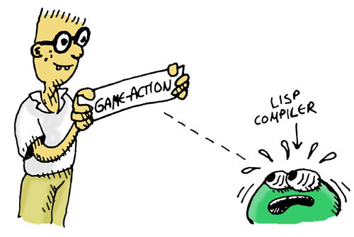
The point of this SPEL is to show you just how sophisticated and clever you can get with these SPELs. Also, the ugliness doesn't really matter much if we only have to write it once and then can use it to make hundreds of commands for a bigger adventure game.
Let's use our new SPEL to replace our ugly weld-them command:
> (game-action weld chain bucket weld-chain)
do-weld
Look at how much easier it is to understand this command- The game-action SPEL lets us write exactly what we want to say without a lot of fat -- It's almost like we've created our own computer language just for creating game commands. Creating your own pseudo-language with SPELs is called Domain Specific Language programming, a very powerful way to program very quickly and elegantly.
...we still aren't in the right situation to do any welding, but the command is doing its job!
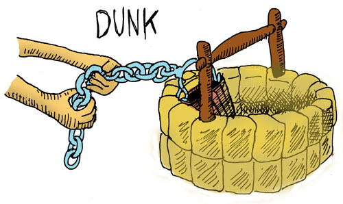
Next, let's rewrite the dunk command as well:
(game-action dunk bucket well dunk-bucket)
do-dunk
Now we're ready to tackle the biggest move of the game ...
The Winning Move
We're still missing one last special action: the one that will let us win the game! Just like with the last two, we're going to create some helper functions:
(defun splash-ready? (game-state)
(andalso (inv? 'bucket game-state)
(goal-met? 'dunk-bucket game-state)
(== (state-player-location game-state) 'living-room)))
(defun splash-not-ready ()
(io:format "~nYou seem to be missing a key condition for splashing ...~n"))
(defun cant-splash ()
(io:format "~nYou can't splash like that ...~n"))
(defun won-msg ()
(io:format (++ "~nThe wizard awakens from his slumber, greets you "
"warmly, and thanks you for~npulling him out of a rather "
"nasty dream.~nYour reward, it seems, is a magical "
"low-carb donut which he hands you ...~nright before "
"drifting off to sleep again.~n~nYou won!!~n")))
(defun lost-msg ()
(io:format (++ "~nThe wizard awakens to see that you are in possession "
"of his most precious --~nand dangerous! -- frog.~nHe "
"completely looses it.~nAs he waves his wand at you, "
"everything disappears ...~n")))
(defun good-splash (game-state)
(case (inv? 'frog game-state)
('false
(won-msg)
game-state)
('true
(lost-msg)
(set-state-player-location game-state 'netherworld))))
(defun already-splashed ()
(io:format (++ "~nYou've already woken the wizard once. With a bucket full "
"of well water.~n"
"Best not push your luck.~n")))
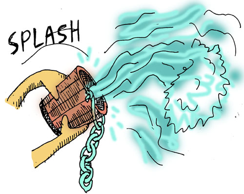
And now we can generate the code for splashing water on the wizard:
> (game-action splash wizard bucket splash-wizard)
do-splash
(defspel splash-wizard (game-state)
`(splash 'wizard 'bucket ,game-state))
()
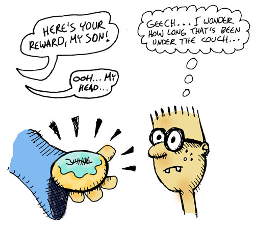
There remains that rather unpleasant user experience, though ... seeing the game state for many of the commands we execute. Ah, but there's a clever solution to that!
Adding a Simple Game Server
The Problem of State
As a functional language, LFE doesn't let you (easily or cleanly) set global state within functions. (This is something that experienced programmers are quite grateful for!) As such, we've had to learn how to pass the game state around to different functions which needed access to that data. Our data may be nice and clean (hooray!), but the effect this has had on the game play is rather awful, to be honest.
Do you think there's a way that we could both pass state data to functions and keep the game interface uncluttered?
We won't keep you in suspense: yes, there is! There are some key ingredients needed for this:
- we need some place to "hide" the state
- wherever we "hide" the state, we need to be able to tell it when to change
- we need to be able to easily retrieve the state from its hiding place
Thinking about this is almost as tricky as creating SPELs ... so let's take it one step at a time.
A Glance at Closures
The solution we have proposed is to "hide" the state data -- but how do we do that? Well, if there was a way to capture the data in a variable, and then have that variable available for querying or updating, we'd be in luck. Fortunately, there is and we are :-)
Thanks to something called closures. The term closure was coined in 1964 and then made widely popular by the creators of a Lisp called Scheme in 1975. Let's see what a closure looks like, and then maybe we can make better sense of the name.
Here's one example:
(defun a-closure (state)
(lambda () state))
What we have above is:
- A function definition that takes a single variable, and
- Returns a separate function which has access to that passed argument.
When we call our a-closure function, we're going to get another function (not a value). Magically, when we call this returned function, we're going to see whatever data was passed as the state argument.
Let's try that out in the REPL:
> (set x (a-closure "here's my state!"))
#Fun<lfe_eval.23.101079464>
(Wait for a year.)
> (funcall x)
"here's my state!"
So, long after we called the function a-closure, we called another function, and got the data that was passed to the original function. One way of describing this is that the state variable was "bound in" or "closed" in the environment of the a-closure function -- thus the name!
So, we've done something that might seem pretty cool ... but maybe not? It's a little hard to tell. Let's try a bit bigger example to see if it is cool, and more importantly, if it might help us with our game.
Let's try writing a closure whose state tracks the balance of greetings:
(defun state-holder (state)
(lambda (msg)
(case msg
('hi
(+ state 1)))))
Let's set up our state with an initial value of 0:
> (set sh (state-holder 0))
#Fun<lfe_eval.12.101079464>
Unlike our first, super-simple example, the lambda in the state-holder example takes an argument. But not any old argument! It can only be 'hi. Let's try it out on our state-holder variable:
> (funcall sh 'hi)
1
> (funcall sh 'hi)
1
> (funcall sh 'hi)
1
Hrm ... we get the same result. When we think about it, that makes sense: we only bound our state variable once, when we called the state-holder function. Let's try it again:
(defun state-holder (state)
(lambda (msg)
(case msg
('hi
(state-holder (+ state 1))))))
Since we're returning a new closure for the updated state, we'll want to capture it -- so we'll re-set the sh variable with each call. We'll start by calling the function we've defined:
> (set sh (state-holder 0))
#Fun<lfe_eval.12.101079464>
What has just been saved in the sh variable is the output of the state-holder function, an anonymous function which takes a message as a parameters. Let's call this returned function repeatedly, resetting the output each time so that we keep track of the updated state:
> (set sh (funcall sh 'hi))
#Fun<lfe_eval.12.101079464>
> (set sh (funcall sh 'hi))
#Fun<lfe_eval.12.101079464>
> (set sh (funcall sh 'hi))
#Fun<lfe_eval.12.101079464>
Well, maybe that's better -- we just can't tell. We keep getting the new closure back. How can we get a look at the current state? We could add a new message type ...
(defun state-holder (state)
(lambda (msg)
(case msg
('hi
(state-holder (+ state 1)))
('amount?
state))))
Let's try this out:
> (set sh (state-holder 0))
#Fun<lfe_eval.12.101079464>
> (set sh (funcall sh 'hi))
#Fun<lfe_eval.12.101079464>
> (set sh (funcall sh 'hi))
#Fun<lfe_eval.12.101079464>
> (funcall sh 'amount?)
2
> (set sh (funcall sh 'hi))
#Fun<lfe_eval.12.101079464>
> (funcall sh 'amount?)
3
Hey, look at that! We've got something pretty cool happening: the internal workings and representation of the state are hidden away. When we want to change things, we just need to send the right message and then rebind our sh variable to the updated state-holder. The down side is that we're seeing the closure data (the output of #Fun<lfe_eval.12.101079464>). But maybe there's a way around that?
There is :-) But we're going to have to go a little further down the rabbit hole ...
Light-weight Processes as Closures
We've looked at classic Lisp closures, and now we're going to look at something completely different ... that's almost the same thing!
LFE runs on the Erlang Virtual Machine, and Erlang is famous for its "light-weight processes". It turns out that we can use these processes in a way that is very similar to closures. To take advantage of this, we will need a couple of parts:
- a state-holder function
- something that starts our initial state-holder "process"
- a name for our state-holder "process"
- something that stops our state-holder "process"
Here's what something like these might look like:
(defun state-holder (state)
(receive
('hi
(state-holder (+ 1 state)))
('amount?
(io:format "Current state: ~p~n" (list state))
(state-holder state))))
(defun state-holder ()
(state-holder 0))
(defun start ()
(let ((sh-pid (spawn #'state-holder/0)))
(register 'our-proc sh-pid)))
(defun stop ()
(exit (whereis 'our-proc) 'done))
See that receive call? That's like the lambda in the previous example that was creating our closure. Just like we could send messages to that lambda, we can really send message to the receive.
As you can see, to start things off, we are going to "spawn" a function as its own tiny little process (these are nothing like operating system processes!). And then we are going to send messages to it -- kinda like our closures. We'll use the special "send" function, though: (! ...) And we'll use the (whereis ...) function to look up our spawned process id. Wanna try it out?
Start by pasting the code about into your LFE REPL. Then, start up the "server":
> (start)
true
Now you can do the following
> (! (whereis 'our-proc) 'hi)
hi
> (! (whereis 'our-proc) 'hi)
hi
> (! (whereis 'our-proc) 'amount?)
amount?
Current state: 2
> (! (whereis 'our-proc) 'hi)
hi
> (! (whereis 'our-proc) 'amount?)
amount?
Current state: 3
Whadayaknow? This is looking like it might be the answer! No ugly state data displayed after each command, no weird function representation printed to our REPL -- this is a pretty clean user experience. We still get the output of our "send" command, but that's pretty easy to overlook. And we might be able to make that even better...
Making a Game Server
Given what we're learned so far, we're ready to make a small process "server" that will hold our game's state. We can then send messages to it that will execute the functions we've defined. Here's a list of the commands we need to support in order to play the game:
- look
- walk (we'll use "go" instead)
- pickup (we'll use "take" instead)
- inv
- weld
- dunk
- splash
Assuming that you've already defined the variables in this function, you can create a game-state initializer like so:
(defun init-state ()
(make-state
objects objects
places (list living-room garden attic netherworld)
player-location 'living-room
goals goals))
There's one more thing we can do, though: take pity on the overly-curious and inclined-to-steal-frogs. Let's make sure that a player who takes too strong an interest in making new amphibian friends can amend their ways:
(defun spell-of-mercy ()
(timer:sleep 2000)
(io:format (++ "~nFrom deep in the mists, you hear a familiar intonation ...~n"
"Great relief washes over you, as you recognize the "
"time-travel spell -- you're~nnot doomed!~n~n"))
(timer:sleep 4000)
(io:format (++ "Confident that you will never pick up the frog again, "
"things get a bit fuzzy.~nYou start to lose consciousness"
"as the wizard pulls you back in time. Your~nlast thought is "
"that you're probably not going to remember any of this "
"...~n~n"))
(timer:sleep 4000)
(let ((state (init-state)))
(display-scene state)
state))
Now we can create our state holder "server":
(defun loop-server (state)
(receive
(`#(look)
(display-scene state)
(case (state-player-location state)
('netherworld (loop-server (hope-for-mercy state)))
(_ (loop-server state))))
(`#(exits)
(display-exits state)
(loop-server state))
(`#(go ,direction)
(loop-server (walk-direction direction state)))
(`#(take ,item)
(loop-server (pickup-item item state)))
(`#(inv)
(display-inv state)
(loop-server state))
(`#(weld ,subj ,obj)
(loop-server (do-weld subj obj state)))
(`#(dunk ,subj ,obj)
(loop-server (do-dunk subj obj state)))
(`#(splash ,subj ,obj)
(loop-server (do-splash subj obj state)))))
(defun loop-server ()
(loop-server (init-state)))
(defun start ()
(case (whereis 'game-server)
('undefined
(let ((server-pid (spawn #'loop-server/0)))
(register 'game-server server-pid)
'#(status started)))
(_ '#(status already-started))))
(defun stop
(('undefined _)
'#(status already-stopped))
((pid msg)
(exit pid msg)
`#(status ,msg)))
(defun stop ()
(stop (whereis 'game-server) 'game-over))
Start up your new game server!
> (start)
#(status started)
Try starting (again), stopping and restarting:
> (start)
#(status already-started)
> (stop)
#(status game-over)
> (stop)
#(status already-stopped)
> (start)
#(status started)
Next, we can cast some new SPELs for use with our server ...
Supporting Commands
Throughout the entirety of this little book, we've asked you, gentle coder, to suspend the horror of having to see the game state spit out at you with every command. At the beginning of this chapter, we proposed a solution for this -- the use of closures -- in order to hide the state data from the user experience. In the last section we successfully created a game server that will contain this state. That last piece of this puzzle, then, is now able to fall into place: a new set of game commands, specifically written to make use of our new game server.
We can also take this opportunity to do a little clean-up work on the command results. We will tackle the following
- Create a new command prompt that provides a separator between our last action + result and the new user prompt;
- Create a SPEL for sending a command to the server;
- Create command SPELs that make use of this general
sendSPEL; and - Create a function that presents text to the user in a nicely-wrapped manner.
Let's finish up!
As just mentioned, we're going to want to put a separator between each command:
(defspel sent-prompt ()
'(list_to_atom (string:copies "-" 78)))
Not only does that help us keep the command history clearly delineated, it takes care of that pesky problem of seeing the return value from calling the (! ...) function.
Speaking of which: since we're going to be making so many calls to (! ...) (one for each command), how about we create a SPEL for that -- it will make things much cleaner:
(defspel send (args)
`(progn
(! (whereis 'game-server) ,args)
',(sent-prompt)))
We had noticed earlier when making our first process-based server that the command hi was output to the user -- this is simply because it was the output of the last function inside the send command. What if we make the last function inside the send command return something that we want to see? ... like our new prompt! So that's what we've done :-)
Now let's create the commands that we will type: the SPELs that will send messages to our little game server:
(defspel go (direction)
`(send #(go ,direction)))
(defspel look ()
`(send #(look)))
(defspel exits ()
`(send #(exits)))
(defspel inv ()
`(send #(inv)))
(defspel take (item)
`(send #(take ,item)))
(defspel weld (subj obj)
`(send #(weld ,subj ,obj)))
(defspel dunk (subj obj)
`(send #(dunk ,subj ,obj)))
(defspel splash (subj obj)
`(send #(splash ,subj ,obj)))
Now that we've got some new SPELs, let's try them out:
> (look)
------------------------------------------------------------------------------
>
You are in the living-room of a wizard's house. There is a wizard snoring loudly on the couch.
You see a whiskey-bottle on the ground. You see a bucket on the ground.
There is a door going west from here. There is a stairway going upstairs from here.
Look at that! No more state -- we're not passing it and we're not seeing it returned! The closures are taking care of that for us. We haven't abandoned the functional programming way -- our game code is still not mutating any data. We've just "hidden" the plumbing, as it were, with the raised floor of closures :-)
But ... the lines are a bit long. Let's make some changes to fix that. Here's some code for wrapping long lines:
(defun make-regex-str (max-len)
(++ "(.{1," (integer_to_list max-len) "}|\\S{"
(integer_to_list (+ max-len 1)) ",})(?:\\s[^\\S\\r\\n]*|\\Z)"))
(defun wrap-text (text max-len)
(let ((find-patt (make-regex-str max-len))
(replace-patt "\\1\\\n"))
(re:replace text find-patt replace-patt
'(global #(return list)))))
(defun wrap-text (text)
(wrap-text text 78))
And we can use that to update our display-scene/1 and display-exits/1 functions:
(defun display-scene (game-state)
(io:format
"~n~s~s~s"
(lists:map
#'wrap-text/1
`(,(describe-location game-state)
,(describe-items game-state)
,(describe-exits game-state)))))
(defun display-exits (game-state)
(io:format
"~n~s"
(list (wrap-text (describe-exits game-state)))))
Let's try again, with our display functions updated to wrap long text:
> (stop)
#(status game-over)
> (start)
#(status started)
> (look)
------------------------------------------------------------------------------
>
You are in the living-room of a wizard's house. There is a wizard snoring
loudly on the couch.
You see a whiskey-bottle on the ground. You see a bucket on the ground.
There is a door going west from here. There is a stairway going upstairs from
here.
Ah, much better :-)
Well, it looks like we're finally ready to play our game!
Let's Play!
You have now written a complete text adventure game!
Shall we play a game?
Winning Play-Through
If you have any problems at this point, you can still play through the game: all you need to do is load the code from the gamefile provided in the code repository for this book:
$ git clone https://github.com/lfe/casting-spels.git
$ cd casting-spels
$ /path/to/your/lfe-dir/bin/lfe
Then, in the LFE REPL, do this:
> (run "code/game.lfe")
game-data-loaded
And you're ready to go!
Let's start:
> (look)
------------------------------------------------------------------------------
>
You are in the living-room of a wizard's house. There is a wizard snoring
loudly on the couch.
You see a whiskey-bottle on the ground. You see a bucket on the ground.
There is a door going west from here. There is a stairway going upstairs from
here.
(go west)
------------------------------------------------------------------------------
>
You are in a beautiful garden. There is a well in front of you.
You see a frog on the ground. You see a chain on the ground.
There is a door going east from here.
(take chain)
------------------------------------------------------------------------------
>
You are now carrying the chain.
(go east)
------------------------------------------------------------------------------
>
You are in the living-room of a wizard's house. There is a wizard snoring
loudly on the couch.
You see a whiskey-bottle on the ground. You see a bucket on the ground.
There is a door going west from here. There is a stairway going upstairs from
here.
(take bucket)
------------------------------------------------------------------------------
>
You are now carrying the bucket.
(go upstairs)
------------------------------------------------------------------------------
>
You are in the attic of the wizard's house. There is a giant welding torch in
the corner.
There is a stairway going downstairs from here.

(weld chain bucket)
------------------------------------------------------------------------------
>
You have achieved the 'weld-chain' goal!
The chain is now securely welded to the bucket.
(go downstairs)
------------------------------------------------------------------------------
>
You are in the living-room of a wizard's house. There is a wizard snoring
loudly on the couch.
You see a whiskey-bottle on the ground.
There is a door going west from here. There is a stairway going upstairs from
here.
(go west)
------------------------------------------------------------------------------
>
You are in a beautiful garden. There is a well in front of you.
You see a frog on the ground.
There is a door going east from here.
(dunk bucket well)
------------------------------------------------------------------------------
>
You have achieved the 'dunk-bucket' goal!
The bucket is now full of water.
(go east)
------------------------------------------------------------------------------
>
You are in the living-room of a wizard's house. There is a wizard snoring
loudly on the couch.
You see a whiskey-bottle on the ground.
There is a door going west from here. There is a stairway going upstairs from
here.
(splash wizard bucket)
------------------------------------------------------------------------------
>
You have achieved the 'splash-wizard' goal!
The wizard awakens from his slumber, greets you warmly, and thanks you for
pulling him out of a rather nasty dream.
Your reward, it seems, is a magical low-carb donut which he hands you ...
right before drifting off to sleep again.
You won!!
Losing Play-Through
Now, for the morbidly curious, here's what a losing scenario might look like, starting from when you're in the garden:
(take chain)
------------------------------------------------------------------------------
>
You are now carrying the chain.
(take frog)
------------------------------------------------------------------------------
>
You are now carrying the frog.
You then perform all the other tasks that you would do in the winning scenario. Finally, you are ready to wake the wizard:
(inv)
------------------------------------------------------------------------------
>
You are carrying the following:
- bucket
- frog
- chain
(splash wizard bucket)
------------------------------------------------------------------------------
>
You have achieved the 'splash-wizard' goal!
The wizard awakens to see that you are in possession of his most precious --
and dangerous! -- frog.
He completely looses it.
As he waves his wand at you, everything disappears ...
Wondering what happened, you take a look around:
(look)
------------------------------------------------------------------------------
>
Everything is misty and vague. You seem to be in the netherworld.
There are no exits.
You could be here for a long, long time ...
Nothing happens. You look some more:
(look)
------------------------------------------------------------------------------
>
Everything is misty and vague. You seem to be in the netherworld.
There are no exits.
You could be here for a long, long time ...
Again, nothing. Another try ...
(look)
------------------------------------------------------------------------------
>
Everything is misty and vague. You seem to be in the netherworld.
There are no exits.
You could be here for a long, long time ...
And as you're wondering what's going on, after a few seconds, you see this:
From deep in the mists, you hear a familiar intonation ...
Great relief washes over you, as you recognize the time-travel spell -- you're
not doomed!
After a few more seconds you see this:
Confident that you will never pick up the frog again, things get a bit fuzzy.
You start to lose consciousness as the wizard pulls you back in time. Your
last thought is that you're probably not going to remember any of this ...
Finally, you are back where you started:
You are in the living-room of a wizard's house. There is a wizard snoring
loudly on the couch.
You see a whiskey-bottle on the ground. You see a bucket on the ground.
There is a door going west from here. There is a stairway going upstairs from
here.
Now you have the chance to play the game again, but this time without taking the power-frog!
What's Next?
In order to make this tutorial as simple as possible, many details about how LFE works have been glossed or fudged over. The aim of this little book is to provide a fun exposure to some of LFE's ideas, not to provide an in-depth introduction to the language, to distributed systems, and the theories behind these both.
That being said, should the curious reader want to learn more, where can they go? And what was skipped in the first place?
Starting with the second bit first, here are some of the key points we have largely ignored:
- The differences between writing code in the REPL and creating proper projects complete with the appropriate directory structures, modules, etc.
- A discussion of the data types supported by LFE
- Comparing and contrasting
if,cond, and pattern-matching as conditional flow mechanisms - No in-depth discussion of records nor detailed information about the automatically-generated record macros
- No detailed explanation of higher-order functions
- Only a passing explanation of macros
- No in-depth discussion of light-weight Erlang/LFE processes
And where can you go for additional reading and learning materials? Currently, the documentation for LFE is a bit limited, though growing (in fits and starts). The documentation web site is currently getting an overhaul and should be much better in a few months. The first chapter of the classic work Structure and Interpretation of Computer Programs is available for LFE. Another great resource for LFE is browsing the archives of the LFE blog, many posts in which are actually tutorials.
For mastering some of the basics of Lisp, we recommend the following:
- Practical Common Lisp by Peter Seibel
- Principles of Artificial Intelligence by Peter Norvig (largely a text on Lisp)
- On Lisp by Paul Graham
- Land of Lisp by Conrad Barski (the auther of the original Casting SPELs in Lisp)
For Erlang, probably the most accessible is Learn You Some Erlang for Great Good (LYSE), through there are also other excellent resources. LYSE is freely available online, while most other Erlang books (also quite good) are pay for download or available in print (including LYSE).
Addenda
Changes from the Original
As mentioned in the introduction to the LFE edition of "Casting SPELs in Lisp" the changes from the original (written in Common Lisp) are many. Primarily this was due to the fact that LFE (and Erlang) does not support mutable data nor global state (two very good things to avoid). As such, the game had to be restrcutured to pass state data (in the form of LFE records) and, eventually, a process server to manage state in a safe, non-global manner.
These resulted in a great deal more work required of the coder, since the game is no longer as simple an application as that developed in the original. However, it does to a good job of preparing the reader (coder!) for writing applications in LFE using OTP (highly recommended), and as such offers a great jumping-off point for real-world LFE.
All this being said, every attempt was made to preserve the fun and tone of the original -- if we have not done that, then we have failed.
The Case Against the Word "Macro"
Part of the purpose of writing this tutorial is to experiment with ways that can tackle the difficult subject of true macros in Lisp. Often, when I try to explain the concept of macros to somebody who has only used other languages, I'll get a response like "Oh yeah! There's macros like that in C++, too!". The moment this happens, it becomes very difficult to explain "true macros", because of the semantic load on the word "macro". After all, "true macros" really are a lot like C++ macros, in that they are a way to talk to the compiler with modified code...
...so imagine if John McCarthy had used the word "add" instead of "cons" to connect items to lists: It would make it really difficult to explain how consing works.
Therefore, I decided to experiment with a new term for a macro in this essay: SPEL, which stands for "Semantic Program Enhancement Logic", which is admittedly a bit of a stretch, but the term has many benefits:
- It captures the almost magical power that Lisp macros can have to change the behavior of a Lisp environment.
- The term SPEL can be used in a million different ways to explain programming concepts in elegant ways, using the metaphor of the spell and casting spells.
- The term causes no confusion between true macros and other types of macros.
- The semantic load of the term "spel" is very low. A Google search for "(macro OR macros) programming -lisp -scheme" return 1150000 hits. A Google search for "(spel OR spels) programming -lisp -scheme" return only 28400. Even worse when you consider that the search "(macro OR macros) programming (lisp OR scheme)" only returns a measly 395000!
So I hope, as a Lisper, you'll consider supporting this new term. Naturally, any new memes like this have a very low likelihood of success.
If you are an LFE library author, please drop everything you are doing right now and add the following line to your code:
(defmacro defspel body `(defmacro ,@body))
There, problem solved!
:)
-- Conrad Barski, M.D.
Using OTP
Throughout the book, we avoided the fairly complicated topic of OTP (the means by which you can write fault-tolerant, production-ready applications in LFE). There are several great resources to learn of OTP (as provided at the end of the book), but it still felt negligent to show readers how to create a simple game server -- which, if used in production, would cause endless heartache -- and now show they how to do it "properly".
Thus, for the motivated reader, we include here a version of the game converted to LFE/OTP. An explanation of this code and what it does is beyond the scope of this mini-book, but there are plenty of good books where you can read about Erlang/OTP and apply this to what you've learned here, using the LFE/OTP game code to extend your knowledge.
The OTP version of the game is available in the code/spels directory. To run it, you will need to have rebar3 installed on your machine.
To begin with, you'll fire up the LFE REPL:
$ make otp-repl
This will download and compile all the necessary LFE dependencies and then put you into the REPL:
Erlang/OTP 17 [erts-6.2] [source] [64-bit] [smp:4:4] [async-threads:10]
..-~.~_~---..
( \\ ) | A Lisp-2+ on the Erlang VM
|`-.._/_\\_.-'; | Type (help) for usage info.
| g (_ \ |
| n | | | Docs: http://docs.lfe.io/
( a / / | Source: http://github.com/rvirding/lfe
\ l (_/ |
\ r / | LFE v1.0 (abort with ^G)
`-E___.-'
>
At this point, you can start the server and load the game commands:
> (spels-game:start)
#(ok <0.36.0>)
> (include-lib "spels/include/commands.lfe")
loaded-game-commands
With the commands loaded, you're ready to play the game:
> (look)
ok
>
You are in the living-room of a wizard's house. There is a wizard snoring
loudly on the couch.
You see a whiskey-bottle on the ground. You see a bucket on the ground.
There is a door going west from here. There is a stairway going upstairs from
here.
> (go west)
ok
>
You are in a beautiful garden. There is a well in front of you.
You see a frog on the ground. You see a chain on the ground.
There is a door going east from here.
> (take chain)
ok
You are now carrying the chain.
> (go east)
ok
You are in the living-room of a wizard's house. There is a wizard snoring
loudly on the couch.
You see a whiskey-bottle on the ground. You see a bucket on the ground.
There is a door going west from here. There is a stairway going upstairs from
here.
> (take 'bucket)
ok
>
You are now carrying the bucket.
> (go upstairs)
ok
You are in the attic of the wizard's house. There is a giant welding torch in
the corner.
There is a stairway going downstairs from here.

> (weld chain bucket)
ok
>
You have achieved the 'weld-chain' goal!
The chain is now securely welded to the bucket.
> (go downstairs)
ok
You are in the living-room of a wizard's house. There is a wizard snoring
loudly on the couch.
There is a door going west from here. There is a stairway going upstairs from
here.
> (go west)
ok
You are in a beautiful garden. There is a well in front of you.
You see a frog on the ground.
There is a door going east from here.
> (dunk bucket well)
ok
You have achieved the 'dunk-bucket' goal!
The bucket is now full of water.
> (go east)
ok
You are in the living-room of a wizard's house. There is a wizard snoring
loudly on the couch.
There is a door going west from here. There is a stairway going upstairs from
here.
> (splash wizard bucket)
ok
You have achieved the 'splash-wizard' goal!
The wizard awakens from his slumber, greets you warmly, and thanks you for
pulling him out of a rather nasty dream.
Your reward, it seems, is a magical low-card donut which he hands you ...
right before drifting off to sleep again.
You won!!
Source Code
Obtaining a Copy
The source code for the book is available at https://github.com/lfe/casting-spels. To get a copy of this code, simply run:
$ git clone https://github.com/lfe/casting-spels.git
$ cd casting-spels
Regular Version
In this repository, the file code/game.lfe contains all the code one enters in the REPL as following along in the book.
If you choose, you may load all of this code into the REPL as if you had typed it yourself:
$ make repl
Erlang/OTP 17 [erts-6.2] [source] [64-bit] [smp:4:4] [async-threads:10] [kernel-poll:false]
..-~.~_~---..
( \\ ) | A Lisp-2+ on the Erlang VM
|`-.._/_\\_.-'; | Type (help) for usage info.
| g (_ \ |
| n | | | Docs: http://docs.lfe.io/
( a / / | Source: http://github.com/rvirding/lfe
\ l (_/ |
\ r / | LFE v1.0 (abort with ^G)
`-E___.-'
>
> (run "game.lfe")
game-data-loaded
And now you will be able to execute the commands that would be available at the end of the book.
OTP Version
As mentioned in the previous section, source code for an OTP version of the game has been made available in code/spels. To start the REPL for this version, simply run make otp-repl. Note that this code is very different from the code that is entered into the REPL throughout the course of the book, and some commands will not be present (or will have been changed).
For more details, please see the previous section.